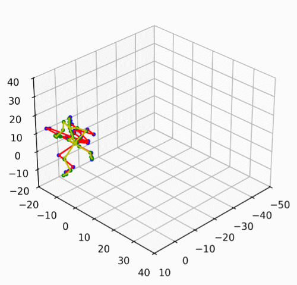

|
Avi Narula I'm a junior at MIT studying electrical engineering (6-5) and mathematics (18) interested in robotics and autonomy. Currently, I work in the Improbable AI Lab on humanoid athleticism advised by John Marangola, Nolan Fey, and Pulkit Agrawal. Outside of academics, I am on the varsity water polo team. |

|
Publications |
|
Joga: Learning Agile Humanoid Soccer Skills with Active Vision
Avinash Narula*, Khai Nguyen*, Nolan Fey*, Venki Parsuram, John Marangola, Martin Peticco, Pulkit Agrawal Preprint, 2026 CoRL 2026 Workshop on Contact-Rich Loco-Manipulation CoRL 2026 Workshop on Roboletics CoRL 2026 Workshop on Sim2Real2Field Full-stack humanoid dribbling, shooting, passing, and receiving with an actuated neck for active vision, aligning the simulator to hardware from minutes of real data. project page / interactive / pdf |
Experience |
|
Robot Learning
Improbable AI Lab, MIT CSAIL Aug 2025 – Present
|
|
|
PoolBot
Python, Drake Oct 2025 – Dec 2025 A mobile manipulation system that plays pool autonomously, reaching a 55% shot success rate and 2.4° mean angular error over multi-shot sequences. paper / video |
|
|
 |
PINA — Physics-Informed Neural networks for Advanced modeling
SISSA mathLab, Trieste, Italy May 2025 – Aug 2025 Contributed to PINA, an open-source physics-informed modeling package in the PyTorch ecosystem. I mainly worked on the Equivariant Graph Neural Operator (EGNO) model. |
|
ML From Scratch
Python, PyTorch May 2025 – Jul 2025 A series of from-scratch implementations to understand the internals of deep learning: a reverse- and forward-mode autodiff library, recreations of key NLP papers (MLPs, RNNs, LSTMs, Transformers), and common robot-learning algorithms including DAgger, Flow Matching, and PPO. |
|
Template based on Jon Barron's website. |